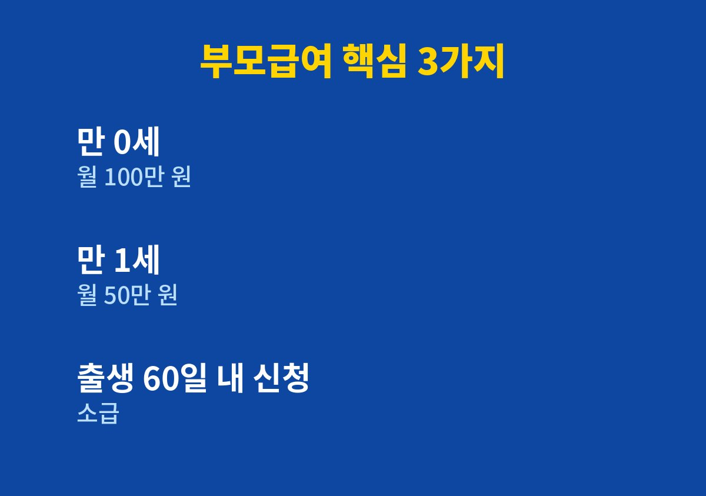
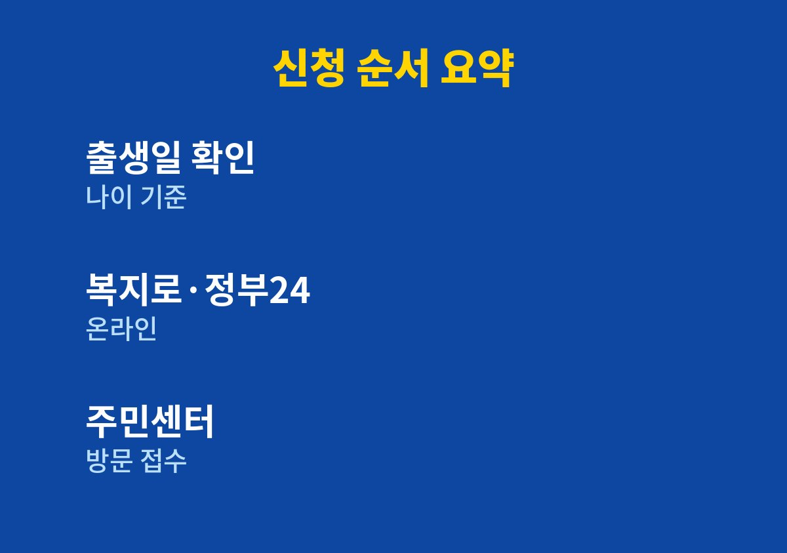

0세나 1세 아이를 키우고 있거나 곧 출산을 앞둔 분이라면 끝까지 읽어 볼 만하다.
2026년 11월 기준으로 내가 찾아보며 정리한 내용이다.
가족과 이야기하다 아이 키우는 집에 매달 들어오는 돈이 정확히 무엇인지 궁금해져 하나씩 찾아보았다.
그중 부모급여는 금액이 커서 신청 시기를 놓치면 아쉬움이 큰 제도였다.
부모급여는 만 0세와 만 1세 아이를 키우는 가정에 매달 현금으로 지급되는 제도다.
아이를 키우는 초기에 드는 돈의 부담을 덜어 주려는 취지로 운영된다.
확인된 지급액은 만 0세 월 100만 원, 만 1세 월 50만 원이다.
출산 직후에는 정신이 없어 신청을 뒤로 미루게 되는 경우가 많다.
이 제도는 신청을 해야 지급이 시작되는 방식이라 가만히 있으면 받을 수 없다.
출생 후 60일 안에 신청하면 소급해서 받을 수 있다는 내용이 여러 자료에서 공통으로 확인되었다.
반대로 이 기한을 넘기면 소급이 되지 않는다고 하니 날짜를 꼭 기억해 두는 편이 좋다.
아이가 태어난 직후에는 출생신고와 각종 서류가 겹쳐 있어 부모급여를 따로 떠올리기 어렵다.
그래서 나는 출생신고를 하러 가는 날 함께 신청 여부를 물어보는 방식이 가장 안전하다고 생각했다.
대상은 만 0세와 만 1세 아이를 양육하는 가정이다.
아이 생일을 기준으로 금액이 바뀌기 때문에 정확한 출생일부터 확인해 두는 것이 우선이다.
소득이나 재산에 따른 별도 요건은 내가 확인한 자료에서 보이지 않았으며, 정확한 기준은 공식 공고에서 확인해야 한다.
어린이집을 이용하면 보육료 지원과 부모급여 사이에서 차액만 지급되는 구조라고 한다.
실제 차액은 아이의 나이와 이용 방식에 따라 달라질 수 있다.
이용 중이라면 주민센터에 내 경우의 정확한 금액을 문의하는 것이 가장 확실하다.
가정에서 직접 아이를 돌보는 경우와 기관을 이용하는 경우의 받는 방식이 서로 다르다는 점도 알아 두면 좋다.
어떤 방식이든 아이 나이가 바뀌는 시점에 금액이 달라지므로 달력에 표시해 두면 실수가 줄어든다.
만 0세 때는 월 100만 원, 이듬해 만 1세가 되면 월 50만 원으로 바뀌는 것으로 정리된다.
1년 단위로 합쳐 보면 가정 살림에 적지 않은 차이가 되므로 첫 신청에서 빠뜨리지 않는 것이 중요하다.
지급일과 세부 방식은 해마다 달라질 수 있어 공식 안내를 따로 확인해야 한다.
같은 시기에 받을 수 있는 다른 아이 지원 제도와 겹치는지도 함께 살펴보면 좋다.
겹쳐서 받을 수 있는지는 제도마다 다르므로 단정하지 않고 주민센터에서 확인하는 것이 맞다.
| 구분 | 내용 | 비고 |
| 만 0세 | 월 100만 원 | 출생 60일 안 신청 시 소급 |
| 만 1세 | 월 50만 원 | 어린이집 이용 시 차액 |
| 신청처 | 복지로·정부24·주민센터 | 온라인 또는 방문 |

신청은 복지로, 정부24, 주민센터 방문을 통해 할 수 있다고 안내된다.
바쁜 시기에는 온라인으로 먼저 접수해 두는 방법이 마음이 편하다.
서류는 신청처마다 다를 수 있으므로 접수 전에 안내 내용을 한 번 읽어 보는 것이 좋다.
아래 순서대로 하나씩 확인하면 빠뜨리는 일이 줄어든다.

출생 후 60일이라는 기한은 달력에 먼저 표시해 두는 것이 좋다.
개인정보를 넘기면 대신 신청해 준다는 곳은 조심해야 하며, 신청은 공식 창구에서 직접 하는 것이 안전하다.
제도는 바뀔 수 있으니 신청 직전에 한 번 더 공식 공고를 읽어 보아야 한다.
아이가 태어난 뒤 가장 먼저 챙길 서류 중 하나가 부모급여 신청이라고 생각한다.
이 글이 신청 시기를 놓치지 않는 데 작은 도움이 되었으면 한다.
※ 2026년 11월 기준 공개된 정보를 정리한 글이며, 정확한 대상 요건·금액·신청 기간은 복지로·정부24·관할 주민센터의 공식 공고를 확인하시길 바란다.